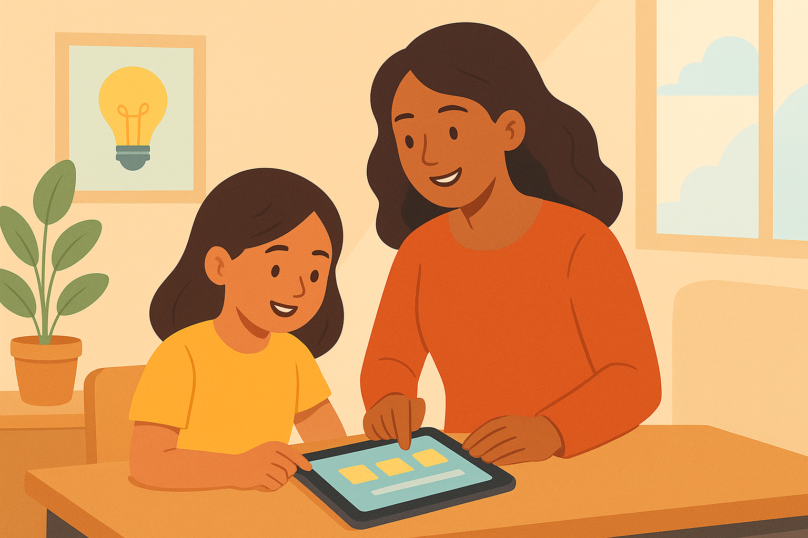
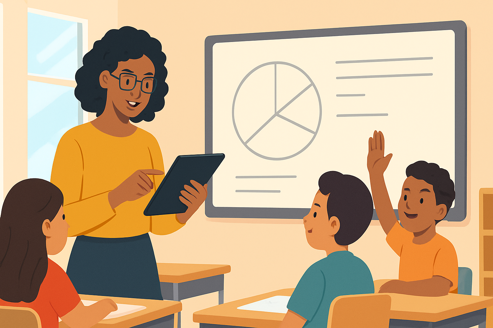
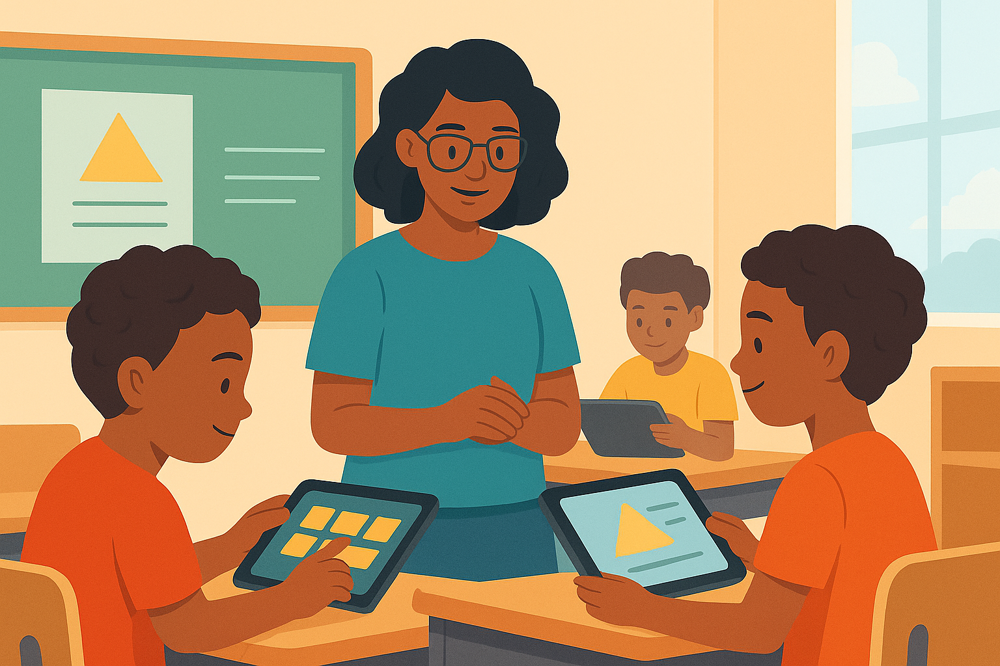

How Technology Is Changing Classroom Learning — The Future Is Here, and Parents Are Part of It
Education is no longer confined to one place or one method. The classroom is now a living, evolving space, and technology is its bridge to opportunity. For parents, embracing this transformation means recognising that learning today happens through collaboration, creativity, and critical thinking — skills that digital tools help unlock. The best education systems of the future will not be defined by gadgets, but by how they use technology to make learning more human: more inclusive, engaging, and empowering. As a parent, your role is no longer to guard your child from technology, but to guide them through it. Ask questions, explore learning apps together, and stay connected with teachers digitally. By taking an active, curious role you help shape how your child uses technology — turning screen time into meaningful learning time. When parents, teachers, and innovators work together, every child gains the tools to turn curiosity into capability. The classroom is changing — and with the right support, every child can change the world.
Article Gallery
Building Digital Equity: Why Every Child Deserves Access to Learning Tools
In a world where knowledge is power, access to technology has become a new measure of opportunity. Yet millions of students across developing communities remain disconnected — not because of lack of talent, but lack of tools. Digital equity means every learner, regardless of background, has access to the devices, internet, and digital literacy skills they need to thrive. It’s more than providing gadgets; it’s ensuring fair chances to learn, dream, and compete in a digital economy. When governments and NGOs invest in inclusive education technology, they aren’t just bridging a gap — they’re building the next generation of innovators and thinkers. The future workforce will be defined not by geography but by connectivity.
From Screen Time to Skill Time: How Digital Learning Builds Real-World Competence
Technology doesn’t just change how children learn — it changes what they learn. Behind every coding app, animation project, or online quiz lies a lesson in creativity, logic, and persistence. The misconception that all screen time is harmful misses the bigger picture. Digital tools, when guided and balanced, transform passive consumption into active creation. A student learning to design a game, film a documentary, or solve a coding puzzle is building skills for the modern world — collaboration, communication, and problem-solving. For educators, the challenge is balance: using digital tools to complement, not replace, hands-on experience. For parents, the opportunity is to engage — explore apps together, set goals, and talk about what they’re learning. The real measure of success isn’t time spent on screens, but the skills developed through them. In a connected world, digital learning is not distraction — it’s preparation.
Policy in Motion: How Governments Can Future-Proof Education Systems
TThe education systems that will lead the future are those that evolve with it. As technology reshapes every sector, governments must reimagine how learning happens and how to prepare students for a world of automation, AI, and innovation. Future-proofing education requires more than distributing devices. It demands strategic investment in teacher training, curriculum reform, and robust digital infrastructure. Schools must be equipped to teach not just facts, but adaptability, creativity, and digital fluency. Data-driven policy can ensure no learner is left behind. When decision-makers align technology with national goals — from rural connectivity to inclusive classrooms — education becomes a lever for social and economic transformation. Technology is not just a tool for learning; it’s a tool for governance. Building smart, sustainable education systems means building smarter nations.
The Future Learner: Growing Creativity, Empathy, and Adaptability in a Tech World
In a fast-changing digital world, the most valuable lessons are not found in apps or algorithms but in the human qualities that technology can never replace. The future learner must be curious, empathetic, and adaptable. Technology can amplify these traits when used intentionally — helping students explore diverse cultures, solve global problems, and express themselves creatively. Educators can nurture emotional intelligence through collaboration projects and storytelling. Parents can model empathy by discussing online behavior and encouraging reflection. Together, they help children balance logic with compassion. The goal of education is not just to create coders, scientists, or innovators — but good humans. In a connected world, character is the ultimate technology.
The Future Learner: Growing Creativity, Empathy, and Adaptability in a Tech World
In a fast-changing digital world, the most valuable lessons are not found in apps or algorithms but in the human qualities that technology can never replace. The future learner must be curious, empathetic, and adaptable. Technology can amplify these traits when used intentionally — helping students explore diverse cultures, solve global problems, and express themselves creatively. Educators can nurture emotional intelligence through collaboration projects and storytelling. Parents can model empathy by discussing online behavior and encouraging reflection. Together, they help children balance logic with compassion. The goal of education is not just to create coders, scientists, or innovators — but good humans. In a connected world, character is the ultimate technology.